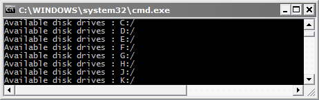
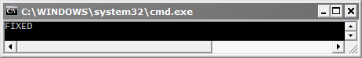
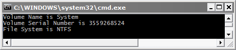
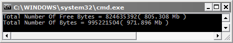
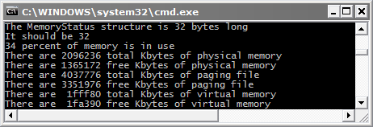
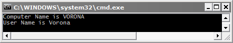
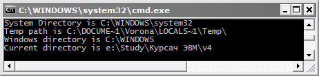

ЛАБОРАТОРНАЯ РАБОТА № 4
ПОЛУЧЕНИЕ ИНФОРМАЦИИ О СИСТЕМЕ
Цель работы — изучить работу функций по получению информации о системе.
Теоретическая часть
Существует много функций для получения информации о системе. Ниже приведены некоторые из них с подробным описанием их параметров.
1) GetLogicalDrives
Функция GetLogicalDrives возвращает число – битовую маску, в которой хранятся все доступные диски.
DWORD GetLogicalDrives(VOID);
§ Параметры:
Эта функция не имеет параметров.
§ Возвращаемое значение:
Если функция вызвана правильно, то она возвращает число – битовую маску, в которой хранятся все доступные диски ( если нулевой бит равен 1, то диск "A:" присутствует, и т.д.). Если функция вызвана не правильно, то она возвращает 0.
Пример:
int n;
char dd[4];
DWORD dr = GetLogicalDrives();
for( int i = 0; i < 26; i++ )
{
n = ((dr>>i)&0x00000001);
if( n == 1 )
{
dd[0] = char(65+i); dd[1] = ':'; dd[2] = '\';
dd[3] = 0;
cout << "Available disk drives : " << dd << endl;
}
}
2) GetDriveType
Функция GetDriveType возвращает тип диска (removable, fixed, CD-ROM, RAM disk, или network drive).
UINT GetDriveType(LPCTSTR lpRootPathName);
§ Параметры:
– lpRootPathName — указатель на не нулевую стоку в которой хранится имя главной директории на диске [in]. Обратный слэш должен присутствовать! Если lpRootPathName равно NULL, то функция использует текущую директорию.
§ Возвращаемое значение:
Функция возвращает тип диска. Возможные варианты типов дисков представлены в табл. 1.
Таблица 4. 1
|
Значение |
Описание |
|
DRIVE_UNKNOWN |
Не известный тип |
|
DRIVE_NO_ROOT_DIR |
Не правильный путь |
|
DRIVE_REMOVABLE |
Съёмный диск |
|
DRIVE_FIXED |
Фиксированный диск |
|
DRIVE_REMOTE |
Удалённый или network диск |
|
DRIVE_CDROM |
CD-ROM диск |
|
DRIVE_RAMDISK |
RAM диск |
Пример:
int d;
d = GetDriveType( "c:\" );
if( d == DRIVE_UNKNOWN )
cout << " UNKNOWN" << endl;
if( d == DRIVE_NO_ROOT_DIR )
cout << " DRIVE NO ROOT DIR" << endl;
if( d == DRIVE_REMOVABLE )
cout << " REMOVABLE" << endl;
if( d == DRIVE_FIXED )
cout << " FIXED" << endl;
if( d == DRIVE_REMOTE )
cout << " REMOTE" << endl;
if( d == DRIVE_CDROM )
cout << " CDROM" << endl;
if( d == DRIVE_RAMDISK )
cout << " RAMDISK" << endl;
3) GetVolumeInformation
Функция GetVolumeInformation возвращает информацию о файловой системе и дисках (директориях).
BOOL GetVolumeInformation (
LPCTSTR lpRootPathName,
LPTSTR lpVolumeNameBuffer,
DWORD nVolumeNameSize,
LPDWORD lpVolumeSerialNumber,
LPDWORD lpMaximumComponentLength,
LPDWORD lpFileSystemFlags,
LPTSTR lpFileSystemNameBuffer,
DWORD nFileSystemNameSize
);
§ Параметры:
– LPCTSTR lpRootPathName — имя диска (директории) [in]
– LPTSTR lpVolumeNameBuffer — название диска [out]
– DWORD nVolumeNameSize — длина буфера названия диска [in]
– LPDWORD lpVolumeSerialNumber — сериальный номер диска [out]
– LPDWORD lpMaximumComponentLength — максимальная длина файла [out]
– LPDWORD lpFileSystemFlags — опции файловой системы [out]
– LPTSTR lpFileSystemNameBuffer — имя файловой системы [out]
– DWORD nFileSystemNameSize — длина буфера имени файловой системы [in]
§ Возвращаемое значение:
Если функция вызвана правильно, то она возвращает не нулевое значение(TRUE). Если функция вызвана не правильно, то она возвращает 0(FALSE).
Пример:
char VolumeNameBuffer[100];
char FileSystemNameBuffer[100];
unsigned long VolumeSerialNumber;
BOOL GetVolumeInformationFlag = GetVolumeInformationA(
"c:\",
VolumeNameBuffer,
100,
&VolumeSerialNumber,
NULL, //&MaximumComponentLength,
NULL, //&FileSystemFlags,
FileSystemNameBuffer,
100
);
if(GetVolumeInformationFlag != 0)
{
cout << " Volume Name is " << VolumeNameBuffer
<< endl;
cout << " Volume Serial Number is " << VolumeSerialNumber << endl;
cout << " File System is " << FileSystemNameBuffer << endl;
}
else
cout << " Not Present (GetVolumeInformation)" << endl;
4) GetDiskFreeSpaceEx
Функция GetDiskFreeSpaceEx выдаёт информацию о доступном месте на диске.
BOOL GetDiskFreeSpaceEx(
LPCTSTR lpDirectoryName,
PULARGE_INTEGER lpFreeBytesAvailable,
PULARGE_INTEGER lpTotalNumberOfBytes,
PULARGE_INTEGER
);
§ Параметры:
– LPCTSTR lpDirectoryName — имя диска (директории) [in]
– PULARGE_INTEGER lpFreeBytesAvailable — доступно для использования (байт) [out]
– PULARGE_INTEGER lpTotalNumberOfBytes — максимальный объём (в байтах) [out]
– PULARGE_INTEGER lpTotalNumberOfFreeBytes — свободно на диске (в байтах) [out]
§ Возвращаемое значение:
Если функция вызвана правильно, то она возвращает не нулевое
значение (TRUE). Если функция вызвана не правильно, то она возвращает 0 (FALSE).
Пример:
DWORD
FreeBytesAvailable;
DWORD TotalNumberOfBytes;
DWORD TotalNumberOfFreeBytes;
BOOL GetDiskFreeSpaceFlag = GetDiskFreeSpaceEx(
"c:\",
(PULARGE_INTEGER)&FreeBytesAvailable,
(PULARGE_INTEGER)&TotalNumberOfBytes,
(PULARGE_INTEGER)&TotalNumberOfFreeBytes
);
if(GetDiskFreeSpaceFlag != 0)
{
cout << " Total Number Of Free Bytes = " << (unsigned long)TotalNumberOfFreeBytes << "( " << double(unsigned long(TotalNumberOfFreeBytes))/1024/1000 << " Mb )" << endl;
cout << " Total
Number Of Bytes = " << (unsigned long)TotalNumberOfBytes << "( " <<
double(unsigned long(TotalNumberOfBytes))/1024/1000
<< " Mb )" << endl;
}
else
cout << " Not Present (GetDiskFreeSpace)" << endl;
5) GlobalMemoryStatus
Функция GlobalMemoryStatus возвращает информацию об используемой системой памяти.
VOID GlobalMemoryStatus(LPMEMORYSTATUS lpBuffer);
§ Параметры:
–
LPMEMORYSTATUS lpBuffer
— указатель на структуру MEMORYSTATUS
typedef struct _MEMORYSTATUS{
DWORD dwLength; // длина структуры в байтах
DWORD dwMemoryLoad; // загрузка памяти в процентах
SIZE_T dwTotalPhys; // максимальное количество физической памяти в байтах
SIZE_T dwAvailPhys; // свободное количество физической памяти в байтах
SIZE_T dwTotalPageFile; // макс. кол. памяти для программ в байтах
SIZE_T dwAvailPageFile; // свободное кол. памяти для программ в байтах
SIZE_T dwTotalVirtual; // максимальное количество виртуальной памяти в байтах
SIZE_T dwAvailVirtual; // свободное количество виртуальной памяти в байтах
}
MEMORYSTATUS, *LPMEMORYSTATUS;
§ Возвращаемое значение:
Эта функция не возвращает параметров
Пример:
// The
MemoryStatus structure is 32 bytes long.
// It should be 32.
// 78 percent of memory is in use.
// There are 65076 total Kbytes of physical memory.
// There are 13756 free Kbytes of physical memory.
// There are 150960 total Kbytes of paging file.
// There are 87816 free Kbytes of paging file.
// There are 1fff80 total Kbytes of virtual memory.
// There are 1fe770 free Kbytes of virtual memory.
#define DIV 1024
#define WIDTH 7
char *divisor = "K";
MEMORYSTATUS stat;
GlobalMemoryStatus (&stat);
printf ("The
MemoryStatus structure is %ld bytes long.n",stat.dwLength);
printf ("It should be %d.n", sizeof (stat));
printf ("%ld percent of memory is in use.n", stat.dwMemoryLoad);
printf ("There are %*ld total %sbytes of physical memory.n", WIDTH, stat.dwTotalPhys/DIV, divisor);
printf ("There are %*ld free %sbytes of physical memory.n", WIDTH, stat.dwAvailPhys/DIV, divisor);
printf ("There are %*ld total %sbytes of paging file.n", WIDTH, stat.dwTotalPageFile/DIV, divisor);
printf ("There are %*ld free %sbytes of paging file.n", WIDTH, stat.dwAvailPageFile/DIV, divisor);
printf ("There are %*lx total %sbytes of virtual memory.n", WIDTH, stat.dwTotalVirtual/DIV, divisor);
printf ("There are %*lx free %sbytes of virtual memory.n", WIDTH, stat.dwAvailVirtual/DIV, divisor);
6) GetComputerName, GetUserNameA
Функция GetComputerName возвращает NetBIOS-имя
локального компьютера.
BOOL GetComputerName( LPTSTR lpBuffer,LPDWORD lpnSize);
§ Параметры:
– LPTSTR lpBuffer — имя локального компьютера (длина буфера равна MAX_COMPUTERNAME_LENGTH + 1) [out]
– LPDWORD lpnSize — размер буфера (лучше поставить MAX_COMPUTERNAME_LENGTH + 1) [out/in]
§ Возвращаемое значение:
Если функция вызвана правильно, то она возвращает не нулевое значение (TRUE). Если функция вызвана не правильно, то она возвращает 0 (FALSE).
Функция GetUserName возвращает имя текущего пользователя.
BOOL GetUserName(LPTSTR lpBuffer, LPDWORD nSize);
§ Параметры:
– LPTSTR lpBuffer — имя юзера (длина буфера равна UNLEN + 1) [out]
– LPDWORD nSize — размер буфера (лучше поставить UNLEN + 1) [out/in]
§ Возвращаемое значение:
Если функция вызвана правильно, то она возвращает не нулевое значение (TRUE). Если функция вызвана не правильно, то она возвращает 0 (FALSE).
Пример:
char
ComputerName[MAX_COMPUTERNAME_LENGTH + 1];
unsigned long len_ComputerName=MAX_COMPUTERNAME_LENGTH + 1;
char UserName[UNLEN + 1];
unsigned long len_UserName = UNLEN + 1;
BOOL comp = GetComputerName(
ComputerName,
&len_ComputerName
);
if (comp != 0)
cout << "Computer Name is " << ComputerName <<endl;
else
cout << "Computer Name is NOT FOUND !!! " << endl;
comp = GetUserNameA (UserName, &len_UserName);
if (comp != 0)
cout << "User Name is " << UserName << endl;
else
cout << "User Name is NOT FOUND !!! " << endl;
7) GetSystemDirectory, GetTempPath, GetWindowsDirectory, GetCurrentDirectory
Функция GetSystemDirectory возвращает путь к системной директории.
UINT GetSystemDirectory(LPTSTR lpBuffer, UINT uSize);
§ Параметры:
– LPTSTR lpBuffer — буфер для системной директории [out]
– UINT uSize — размер буфера [in]
§ Возвращаемое значение:
Эта функция возвращает размер буфера для системной директории не включая нулевого значения в конце, если она вызвана правильно. Если функция вызвана не правильно, то она возвращает 0.
Функция GetTempPath возвращает путь к директории, отведённой для временных файлов.
DWORD GetTempPath(DWORD nBufferLength, LPTSTR lpBuffer);
§ Параметры:
– DWORD nBufferLength — размер буфера [in]
– LPTSTR lpBuffer — буфер для временной директории [out]
§ Возвращаемое значение:
Эта функция возвращает размер буфера для системной директории не включая нулевого значения в конце, если она вызвана правильно. Если функция вызвана не правильно, то она возвращает 0.
Функция GetWindowsDirectory возвращает путь к Windows
директории.
UINT GetWindowsDirectory(LPTSTR lpBuffer,UINT uSize );
§ Параметры:
– LPTSTR lpBuffer — буфер для Windows директории [out]
– UINT uSize — размер буфера [in]
§ Возвращаемое значение:
Эта функция возвращает размер буфера для системной директории не включая нулевого значения в конце, если она вызвана правильно. Если функция вызвана не правильно, то она возвращает 0.
Функция GetCurrentDirectory возвращает путь к текущей
директории.
DWORD GetCurrentDirectory(DWORD nBufferLength, LPTSTR);
§ Параметры:
– DWORD nBufferLength — размер буфера [in]
– LPTSTR lpBuffer — буфер для текущей директории [out]
§ Возвращаемое значение:
Эта функция возвращает размер буфера для системной директории не включая нулевого значения в конце, если она вызвана правильно. Если функция вызвана не правильно, то она возвращает 0.
Пример:
char path[100];
GetSystemDirectory( path, 100 );
cout << "System Directory is " << path << endl;
GetTempPath( 100, path );
cout << "Temp path is " << path << endl;
GetWindowsDirectory( path, 100 );
cout << "Windows directory is " << path << endl;
GetCurrentDirectory( 100, path );
cout << "Current directory is " << path << endl;
Практическая часть
Разработайте приложение, в котором будут реализованы следующие пункты:
1. Вывод битовой маски, в которой храняться все доступные диски.

2. Вывод типа диска.

3. Вывод информации о файловой системе и дисках (директориях).

4. Вывод информации о доступном месте на диске.

5. Вывод информации об используемой системой памяти.

6. Вывод NetBIOS-имя локального компьютера и имя текущего пользователя.

7. Вывод пути к системной директории, к директории, отведённой для временных файлов, к Windows директории и к текущей директории.

Контрольные вопросы
1. Какая функция возвращает тип диска?
2. Какая функция выдаёт информацию о доступном месте на диске?
3. Какая функция возвращает имя текущего пользователя?
4. Какая функция возвращает путь к текущей директории?
5. Какая функция возвращает NetBIOS-имя локального компьютера?
6. Какая функция возвращает путь к директории, отведённой для временных файлов?
7. Какая функция возвращает битовую маску, в которой хранятся все доступные диски?
8. Какая функция возвращает путь к системной директории?
9. Какая функция возвращает информацию об используемой системой памяти?
10. Какая функция возвращает путь к Windows директории?
11. Какая функция возвращает информацию о файловой системе и дисках (директориях)?